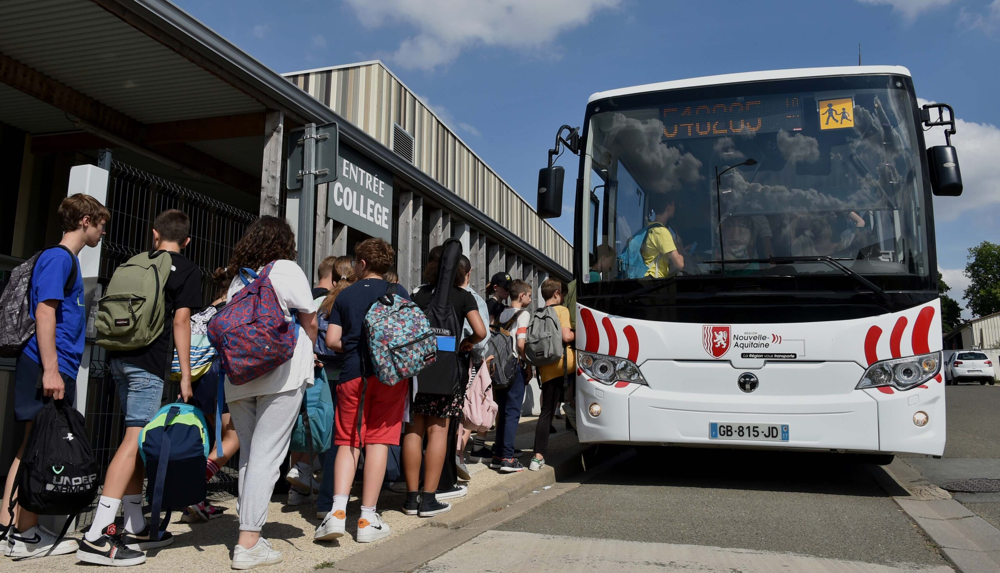
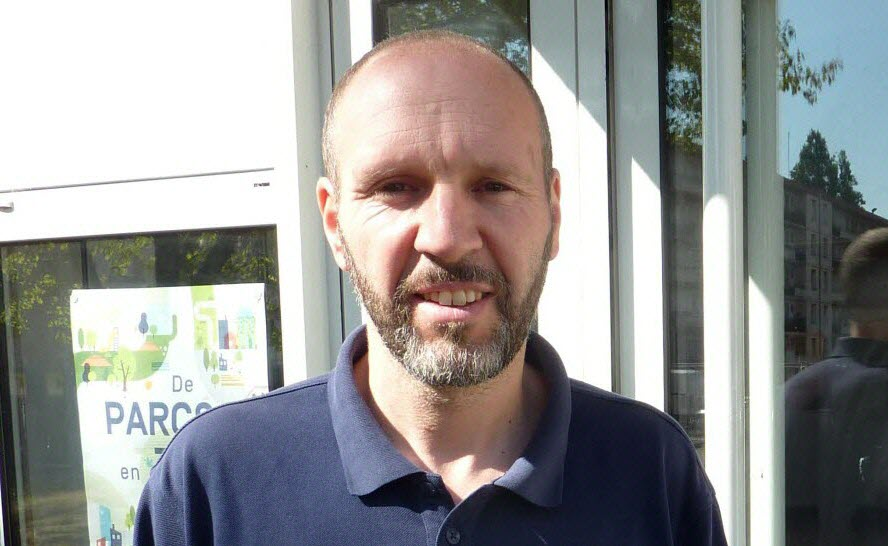
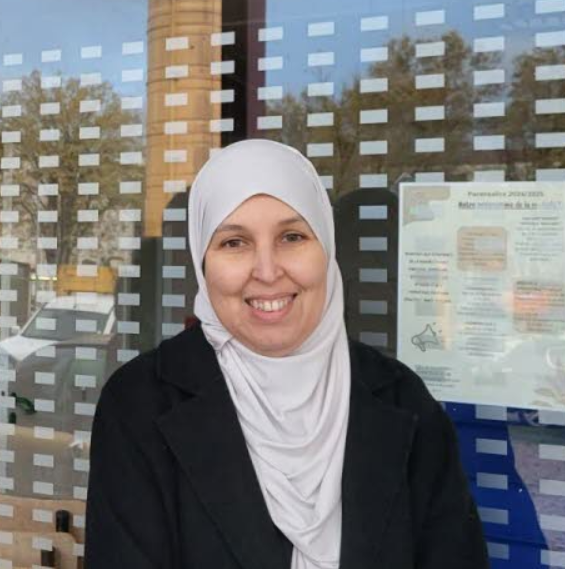
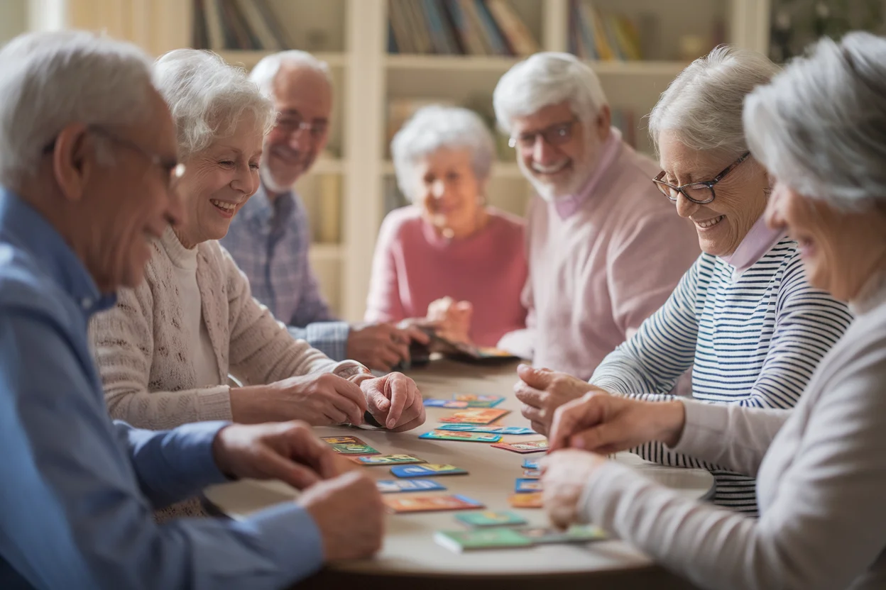
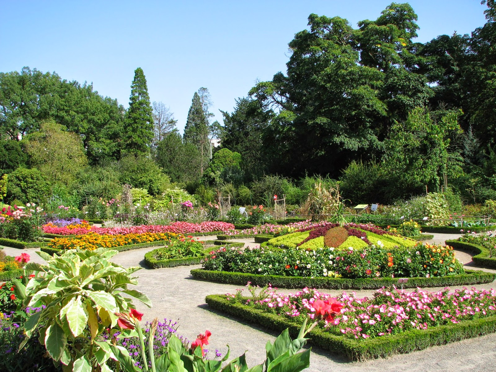

Répart’
Moments d’échanges et d’entraide entre habitants pour renforcer la solidarité du quartier.
31 ans au service des familles
Des activités pour tous : enfants, jeunes, familles et seniors. Rejoignez une communauté chaleureuse à Villeurbanne.

Des programmes adaptés à chaque âge et chaque envie, dans une ambiance conviviale et bienveillante.
Moments d’échanges et d’entraide entre habitants pour renforcer la solidarité du quartier.
.webp)
Ateliers conviviaux autour de la cuisine, du bricolage, des jeux et des activités familiales.
Rencontres citoyennes pour échanger, comprendre les enjeux et encourager la participation démocratique.

Sorties éducatives et culturelles pour les jeunes : musées, parcs, ateliers pédagogiques.
Une équipe engagée au service des familles du quartier Buers & Croix-Luizet.

Directeur
Coordination générale, gestion des projets et relation avec les partenaires.

Adjointe
Organisation des activités, gestion des bénévoles et accueil des familles.
Animateur Jeunesse
Encadrement des ateliers enfants et aide aux devoirs.
Animatrice Seniors
Organisation des rencontres seniors et activités intergénérationnelles.

Nous proposons un service d’aide aux devoirs pour accompagner les élèves dans leur travail.

Les inscriptions pour les ateliers sont ouvertes. Places limitées, inscrivez-vous vite !

Retour en images sur notre sortie familiale au parc. Une journée riche en sourires !
Fatima B. · 15 janvier 2025
« Mes enfants adorent les activités du mercredi ! L’équipe est bienveillante et les animateurs sont formidables. Merci ACBCL ! »
Mohamed K. · 3 décembre 2024
« Une association qui fait un travail remarquable pour le quartier. Les sorties familiales sont toujours très bien organisées. »
Claire D. · 20 novembre 2024
« Super ambiance et activités variées pour les seniors. J’ai rencontré beaucoup de monde grâce à l’ACBCL. Je recommande ! »
Youssef A. · 8 octobre 2024
« L’aide aux devoirs a permis à mon fils de progresser énormément. Les bénévoles sont dévoués et patients. »
Devenez membre de notre association et participez à la vie du quartier. Inscription simple et rapide.
Quartier Buers & Croix-Luizet
Villeurbanne 69100
Tél : 04 XX XX XX XX
Email : contact@acbcl.fr
Horaires :
Lun – Ven : 9h00 – 18h00
Samedi : 9h00 – 12h00